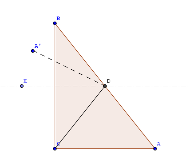

Hexo+Github Pages+Git之旅
Hexo的安装
当前: node v8.9.3, git v2.16.1.windows.4, hexo-cli v1.0.4.
准备工作: 系统环境
- 安装node.js
- 安装git, 勾选
Git Bash Here. - 文本编辑器: 如notepad++, sublime text3, vim, emacs,… 甚至就用记事本就行了. 不过听说记事本有个问题, 涉及到utf8编码时最好不要用.
Microsoft开发记事本的团队使用了一个非常弱智的行为来保存UTF-8编码的文件，他们自作聪明地在每个文件开头添加了0xefbbbf（十六进制）的字符， 你会遇到很多不可思议的问题，比如，网页第一行可能会显示一个“?”，明明正确的程序一编译就报语法错误，等等，都是由记事本的弱智行为带来的。 出处
安装hexo
在目录
C:\users\xyz\的前提下, 安装hexo:npm install hexo-cli -g1
2
3hexo-cli代表 hexo commond line interface
-g代表全局安装，这样可以直接在windows命令行运行
不论在哪个目录下, 都会安装到C:\users\xyz\appdata\roaming\npm\目录下.hexo init blogcd blognpm installhexo server
至此, 在浏览器中打开http://localhost:4000/. 成功的话就可以看到博客页面, 那么安装就算完成了.
另外, 其中的blog可以是多级目录, 以最后一个目录为准, 即大部分操作都在最后一个目录下进行. 与其如此, 不如切换C:\users\xyz\为好.
注: 以hexo.io为准. 在安装这部分, 写得很清楚.
部署到github.io上
假定本地用户名为xyz, github的用户名为xyzio, 注册邮箱为 xyzio@gmail.com.
npm install hexo-deployer-git --save
- 不妨记github的用户名为
xyzio, 注册邮箱为xyzio@gmail.com - 在github中, 点击
New resository, 新建新仓库, 名为:xyzio.github.io. 名字只能如此. 在
C:\users\xyz\blog\_config.yml文件中, 添加:1
2
3
4deploy:
type: git
repository: https://github.com/xyzio/xyzio.github.io.git
branch: master等价写法:
1
2
3
4
5deploy:
type: git
repository:
github: git@github.com:xyzio/xyzio.github.io.git,master
coding: git@git.coding.net:xyzcode/xyzcode.git,master # coding是另一类似github的服务.
关于ssh key: 使用Git的前提(参考)
在dos下
1
2
3$ ssh-keygen -t rsa -C "xyzio@gmail.com"
Generating public/private rsa key pair.
Enter file in which to save the key (/Users/your_user_directory/.ssh/id_rsa):<回车就好>然后系统会要你输入加密串（Passphrase）:
1
2Enter passphrase (empty for no passphrase):<输入加密串>
Enter same passphrase again:<再次输入加密串>如果成功, 会在dos下有反馈, 一眼就明白成功了.
- 添加ssh key到 GitHub:
- 切换到
C:\users\xyz\.ssh, 文本编辑器打开文件id_rsa.pub, 复制内容. - 打开https://github.com/settings/keys, 点击
New SSH key, 将刚才复制的ssh key复制进去, 提交即可. - dos下,
ssh -T git@github.com, 如果最后一行是Are you sure you want to continue connecting (yes/no)?, 输入yes即可. over.
- 切换到
设置账号信息
Git会根据用户的名字和邮箱来记录提交, GitHub也是用这些信息来做权限的处理. 输入下面的代码进行个人信息的设置, 把名称和邮箱替换成你自 己的, 名字必须是你的真名, 而不是GitHub的昵称.
1
2git config --global user.name "xyzio"
git config --global user.email "xyzio@gmail.com"其中
--global参数表示你这台机器上所有的Git仓库都会使用这个配置，当然也可以对某个仓库指定不同的用户名和Email地址.
git clone
日常办公时, 往往需要同步, 即在A电脑(家/办)上做了一部分工作(如写了一些文档), 然后因为时间等原因中断了, 到了B电脑上要继续刚才的工作. 此处有个做法, 供参考.
git的基本常识
- Git是分布式版本控制系统(是一个操作系统, 要与github区分开来).
- 版本库就是仓库就是repository(又简写为repo), 可以理解为一个目录.
- 用
git remote add xxxx master git@github.com:xyzio/gitme.git
弃git remote add xxxx master https://github.com/xyzio/gitme.git
理由是后者每次都要输入id/pwd, 而前者并不需要密码, 因为已经上传了通过ssh生成的key.
利用git命令进行部署
clone github repo
解释：将之前创建的repo(xyzio.github.io)克隆到本地，新建一个目录.deploy用于存放克隆的代码(xyzio.github.io)副本.1
2$ cd d:~/blog
$ git clone https://github.com/xyzio/xyzio.github.io.git .deploy/xyzio.github.io
创建一个不妨命名为
deploy.sh脚本文件1
2
3
4
5
6hexo generate
cp -R public/* .deploy/xyzio.github.io
cd .deploy/xyzio.github.io
git add .
git commit -m “update”
git push origin master解释：
hexo generate生成public文件夹下的新内容，然后将其拷贝至http://xyzio.github.io 的git目录下，然后使用git commit命令提交代码到http://xyzio.github.io这个repo的master branch上.需要部署的时候，执行这段脚本就可以了. 执行过程中可能需要让你输入Github账户的用户名及密码，按照提示操作即可. 这种
.sh文件之间双击即可, 换言之, 可以把批处理文件换成这种.git 命令清单:
git cheatsheet- 问题: 如何将那些md文件同时保存到github上?
方法之一是用两个分支, 其中koko的回答是非常好的补充解释, 也是在下目前的方式, 流程如下:- 本地:
git init - 在github.com上新建仓库mynewrepo
- 本地:git clone git@github.com:xyzio/mynewrepo.git
- 本地:cd mynewrepo
- 在mynewrepo下新建一个文件,如 readme.md, 内容随意
- git add readme.md
- git commit -m “first commit”
- git branch: 看看是否为master分支
- git branch myhexo
- git checkout myhexo
- git push origin myhexo 至此, 在远端的github.com/xyzio下建立了一个新仓库mynewrepo, 其中只有一个分支myhexo. 这个myhexo其实是本地的myhexo上传到远端的. 如果想要更多的分支, 那就在本地git branch fz2, 然后git checkout fz2, git push origin fz2即可.
- 本地:
方法之二是借助于第三方网站(appveyor)服务.
日常使用hexo的常规流程
cd xyz/blog: 将当前目录切换到blog下
hexo clean: 清除已经产生的静态pages. 有些errors只要清空一下就解决了.hexo g: 生成静态文件，会在当前目录下生成一个新的叫做public的文件夹
hexo d: 部署到远程服务器上, 比如github上.
hexo s: 启动本地web服务器, 在浏览器中打开http://localhost:4000/预览效果.
常用命令
hexo的基本常用命令 1
2
3
4
5
6
7hexo new page <filename> //创建草稿
hexo new draft <filename> //创建草稿
hexo publish <filename> //发表草稿
hexo generate //hexo对文章进行处理, 生成静态文件
hexo server //启动本地服务器,可以在本地查看博客
hexo server --debug //生成本地服务器, 检查错误并记录到 debug.log,可以用来在正式发布前进行调试
hexo deploy //部署博客, 本质就是使用git推送到github
FAQ
- 关于插图及图床
- 插图分为相对引用和绝对引用.
- 图床基本上都用七牛: > 免费用户可以获得10G空间，每月10GB下载流量，每月10万次Put请求， 每月100万次Get请求。国内有多个CDN，速度足够快，还可以申请全球加速。 > 对于小站，完全够用了。使用很简单，上传图片以后复制图片链接地址用Markdown语法插入文章即可。
- 插图问题的目前解决方法(用的是相对引用):
. 这是因为在_config.yml文件中
permalink: :year/:month/:day/:title/, 故要返回上级目录.
诡异的是图片的实际地址是/images/001.png, 与图片的实际地址吻合, 但是与前面语法中的逻辑(返回上一级上一级上一级)不符.
插图效果如下:

- 下划线: 文本与公式之间有矛盾. 方法一: 修改js. 方法二: 替换markdown渲染
插件
- 安装:
npm install xxx --save, 卸载:npm uninstall xxx. - 安装也可以用git clone来处理, 放到
\blog\node_modules\下.
搭建wiki
本地/远程 wiki 有多种方式, 在github.com的前提下, 当然是比较好. 但是永远有不确定的因素存在, 什么时候就关闭了, 什么时候就访问不了.
一些好玩的, 期待自己有进一步的改进
- 用 prose.io 随时随地的更新或者写文章
- wixo, freemind 主题